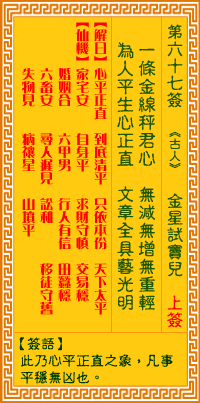

观音灵签第六十七签 【金星试窦儿】 |
 | |||
一条金秤等君心 无减无增无重轻 为是平生心性直 文章不识义皆明 |
||||
| 【吉凶】 | 上上签 | 【宫位】 | 卯宫 | |
| 【签语】 | 此卦心平正直之象，凡事安稳无凶也。 | |||
| 【解曰】 | 心平正直 到底清平 只依本份 天下太平 | |||
| 【仙机】 | 此签家宅安，自身平，求财守慎，交易稳，婚姻合，六甲男，行人有信，田蚕稳，六畜安，寻人迟见，讼和，移徙守旧，失物见，病禳星 ，山坟平。 | |||
| 【详解】 | 想要用一条金秤来衡量你的品性节操，是测不出增、减、轻、重的;乃是因为你平生存心端正毫无偏私，纵使不识文字，仍然通晓义理无碍。 平生正直，善处人情，只依本分，天下太平。此签心中端正之象，凡事平稳大吉。 本签之曰。心中端正之象。凡事能平稳大吉之者。一条金銔等君情。由它衡量即是无减无增。无重轻为人之道。即是人心平生心正直之时。即使不识文章也明白义 之道理。易言之。平生正直善处人情只依本分天下则太平矣。清高门路即可。 此签有”乐善好施”之意。提醒当事人，适度地投其所好。一个人本身如果存心正直、知礼守法，已属难能可贵。但除了本身的品德之外，如何兼顾人情，也是必 须注意的因素。在与人相处时，如果能够多花一点时间，用心倾听对方的感受，不但能让对方觉得有”被重视”的感觉，更可因此知道对方的喜恶，帮得上忙的地 方就尽力协助，而对方的禁忌，也可以避免误触。这种处世哲学，跟佛经上所说的”悉令满足诸需求”有异曲同工之妙。人都是互相的，当你替对方解决了问题、 让对方心无烦忧之后，对方也会反过来想帮助你。这时再提出自己的看法与做为，相信一定能获得多数人的支持与认同，让事情更圆满。所谓”带人要带心”，也 是这个道理。 | |||
| 【典故】 | 窦燕山因行善积德，后生五子，一门显贵。五子名为‘窦伦、窦信、窦仁、窦仪、窦偃。一日窦仪投宿某客栈，上天要试窦仪的心，于是 派遣金精化为女子，诈称临家少女，夜扣窦仪房门，窦仪闭户不纳，此女以投水自尽相要挟，窦仪终不为所动，开门拔剑追女，女子化做一道金光进入地下，窦仪掘地底金一锭。 应为‘金精试窦儿’以度探窦仪之诚。今河北省涿县窦店就是窦家故籍。《善尘缘》传奇故事。 | |||